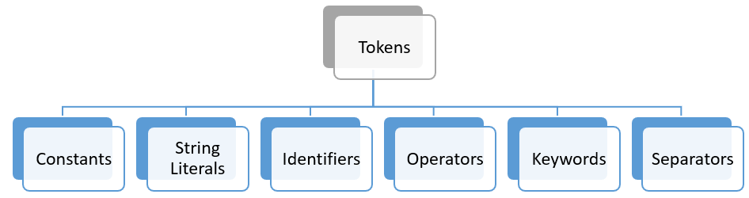

See also: FAQ C is a general-purpose procedural programming language. C is one of the many programming languages that can be used to create programs and it remains to be a popular programming language in the academe and the IT industry. C and its descendants were used to create operating systems like UNIX and Windows as well as other popular software applications. A programming language is a formal language that is used to give instructions to a computer in the form of a program or code. Like any natural language, C has its own set of vocabulary and grammar. The words in C are called tokens and the grammar is called syntax.
Tokens
 C programs are composed of a sequence of characters that are grouped by a compiler into identifiable tokens. These groups of characters cannot be split up without changing their meaning. Tokens can generally be classified into literals (numeric, character, and string), identifiers, operators, keywords, and separators (punctuation). For example, consider the statement:
printf("Height: %d\n", height);This statement consists of seven tokens:
printf // Identifier
( // Seperator / punctuation
"Height: %d\n" // String literal
, // Separator / punctuation
height // Identifier
) // Separator / punctuation
; // Separator / punctuationNote that any amount of space—blanks, tabs, and newline characters—can be placed between tokens.
Literals
Literals are used to represent fixed values and can generally be classified as numeric or non-numeric. They have a value and a data type, but are nonaddressable; i.e., they are stored in memory but there are no means of accessing that address. Examples include 1, 2.5, 'a', or "Hello, world!".
Numeric literals or numeric constants
Numeric literals can be further subdivided into integers and floating-point numbers. int values do not contain any fractional part (as “whole numbers”). float values, on the other hand, do contain fractional parts and can be expressed in scientific notation. In defining numeric constants, the following rules should be followed:
- No comma.
- No space between the unary sign (
+or-) and the digits. - Must begin and end with a digit.
- In macro-definitions defined in preprocessor directives, floating-point values are interpreted as double-precision (
double) unless specified otherwise by appendingfto the value.
- In macro-definitions defined in preprocessor directives, floating-point values are interpreted as double-precision (
Character literals
| Escape sequence | Represented character |
|---|---|
\a | Alert |
\b | Backspace |
\e | Escape character (non-standard) |
\f | Formfeed page break |
\n | Newline (line feed) |
\r | Carriage return |
\t | Horizontal tab |
\v | Vertical tab |
\\ | Backslash |
\' | Single quote (apostrophe) |
\" | Double quote |
\? | Question mark |
\0 | Null character |
%% | Percent symbol |
A character literal is a single character enclosed in single quotes('). Examples include 'a', 'I', '+', '2' Note that there are some special characters that require using a backslash (\; as used in escape sequences seen in the table above) or a percentage symbol (%; as used in placeholders such as in formatted input/output).
Common escape sequences covered within CCPROG1 are highlighted in bold.
String literals
A series of characters is called a string. A string literal should be enclosed in double-quotes (""). Note that certain special characters also need the escape character backslash (\) inside the double-quotes, e.g., \" for including a double-quote character within the string.
Examples:
"De La Salle University""a string with double quotes \" within""a single backslash \\ is in this string"
Identifiers
Identifiers are descriptive names that are given to the variables, constants, and other entities in our program. Identifiers are a sequence of letters, digits, and the special character _ (underscore). They are defined by the programmer and as such should be descriptive. Although C places no limit on the maximum length of an identifier (albeit compilers are only required to remember the first 63 characters in C99), avoid using names that are too short or too long. Limit the identifiers from 8 to 15 characters only.
There are some rules and guidelines for defining identifiers. They are as follows:
- It must consist only of letters, digits, and underscores.
- An identifier cannot begin with a digit.
- An identifier defined in the C standard library should not be redefined. Keywords or reserved words are also invalid identifiers.
- Identifiers are case sensitive, meaning uppercase is not equal to the lowercase.
Hungarian notation
| Data Type | Prefix |
|---|---|
int | n |
long | l |
float | f |
double | d |
char | c |
As a convention, we add prefixes in our variables to easily identify their data type. This is referred to as Hungarian notation.
Constants
Constants are entities that can store a value but cannot be changed. Usually, constant identifiers are written using all capital letters with underscores between each word. It is suggested that we use all capital letters when naming constants to distinguish them from variables. Examples:
MAXNUM_STUDENTSConstants are usually defined at the beginning of a program:
#define <constant identifier> <literal>
Operators
An operator is a symbol in C that is used to perform certain operations on values or variables. For example, the arithmetic operators: *, /, %, +, and - correspond to the operations: multiplication, division, modulo, addition, and subtraction, respectively. Furthermore, evaluating operators follows a hierarchy of priorities. Note that the data type (whether it is an integer or floating-point number) of the operands affects the result of the operation. The three basic types of operators are:
- Arithmetic operators
- Relational operators (
iis greater than0) - Logical operators (
iis greater than0and less than10)
Keywords
| Keyword | Definition |
|---|---|
auto | Specifies automatic storage duration for a variable. |
break | Used to exit from a loop or switch statement. |
case | Used to label values in a switch statement. |
char | Data type to store character values. |
const | Declares a variable as constant, preventing modification. |
continue | Jumps to the next iteration in a loop. |
default | Specifies the code to be executed in a switch statement if no case matches. |
do | Looping construct that executes a block of code at least once. |
double | Data type to store double-precision floating-point numbers. |
else | Used to specify the alternative code in an if statement. |
enum | Defines an enumeration type with symbolic constants. |
extern | Declares a variable or function that is defined in another source file. |
float | Data type to store floating-point numbers. |
for | Used to create a loop with initialization, condition, and increment parts. |
goto | Transfers control to a labeled statement. |
if | Conditional statement for making decisions. |
int | Data type to store integers. |
long | Used to declare a variable with an extended range. |
register | Suggests that a variable should be stored in a register. |
return | Returns a value from a function. |
short | Data type to store integers with a smaller range. |
signed | Specifies the sign of a data type, can be positive or negative. |
sizeof | Returns the size in bytes of a data type or object. |
static | Specifies that a variable retains its value between function calls. |
struct | Defines a composite data structure with multiple members. |
switch | A control statement for multi-way branching. |
typedef | Used to create new data types with type aliases. |
union | A data structure that can store different data types. |
unsigned | Data type modifier for integers, representing only positive values. |
void | Represents an empty data type or return type of a function that doesn’t return anything. |
volatile | Suggests that a variable’s value can change unexpectedly. |
while | Looping construct that repeatedly executes a block of code. |
Keywords are words that have a special meaning in C. Reserved words are words that cannot be used as identifiers. Most of the keywords in C are also reserved words, therefore cannot be used to name entities in your program such as variables.
Separators or punctuation
There are some symbols in C that are used to separate tokens; these are called separators. Spaces, tabs, and newlines (also called whitespaces) are also used to separate tokens but are not tokens themselves.
Examples:
, ; : { }
Comments
Comments are not processed as tokens and are usually ignored by the compiler, replacing them with a single space charaacter; i.e., a statement such as:
a/**/b = 0;—will be interpreted as:
a b = 0;Comments are processed before preprocessing directives are executed. The main use of comments is to make the code more readable and understandable by explaining part of the code in natural language. Usually, introductory comments are added to the beginning of a code that contains the name of the author, the date it was written, and any assumptions made by the programmer. This is not required but it is recommended for good programming practice.
The symbols /* signify the start of the comment, while */ signify the end of the comment. A comment enclosed in /* */ can encompass more than one line. Comments may also appear within the main program or in functions to explain code.
Single-line comments denoted by
//are only possible in version C99 and later. Comments enclosed in/* */cannot be nested inside each other, but comments denoted by//can be nested inside/* */.